Un recorregut pel GNOME 2.14
Construït sobre les espatlles de gegants, el GNOME 2.14 arribarà a les botigues el 15 de març. Apart de noves i més polides funcionalitats, els desenvolupadors han estat treballant contra rellotge per a millorar el rendiment de les aplicacions i biblioteques d'ús més quotidià. En aquest recorregut es detalla el treball més brillant que s'ha dut a terme, el qual ha acabat fent-se camí en aquesta nova versió del GNOME.
El rei de la velocitat
Millores significatives al GNOME 2.14 han conduït a una notable millora de velocitat a l'escriptori. S'ha millorat la velocitat de representació dels tipus de lletres i un nou gestor d'assignació de memòria anomenat GSlice, molt similar en moltes coses al gestor de blocs del nucli del Linux, ofereix unes notables millores de rendiment al GNOME. Determinats punts lents identificats al GNOME, com ara l'inici de sessió, també han estat optimitzats pel nostre genial equip de reis de la velocitat.
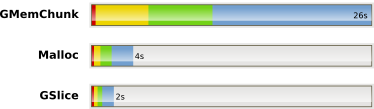
Comparació de rendiment del GMemChunk (l'antic gestor), El Malloc i el GSlice amb 1, 5, 10 i 20 fils cadascun fent 1 milió d'assignacions i desassignacions d'una GList.
Una aplicació que ha cridat molt l'atenció és el Terminal del GNOME, que ara pot mostrar el contingut complet del diccionari a la pantalla literalment en un segon, o en menys de 2 segons si s'utilitzen tipus de lletres amb antidentat (utilitzant tipus de lletra amb antidentat, l'xterm va necessitar 1 minut i 13 segons per a fer el mateix!).
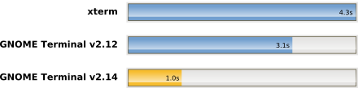
time cat /usr/share/dict/words (tots els terminals amb el tipus de lletra fixa amb 80x25 caràcters). Protegit
Pessulus, un editor de blocatges per al GNOME, n'és part del nou paquet d'administració, un conjunt d'eines per a administradors. Pessulus permet que els administradors inhabilitin determinades funcionalitats de l'escriptori GNOME. Aquesta funció és molt útil en entorns d'empresa i a cibercafès, on els usuaris no han de poder editar els pannells, utilitzar la consola, etc.
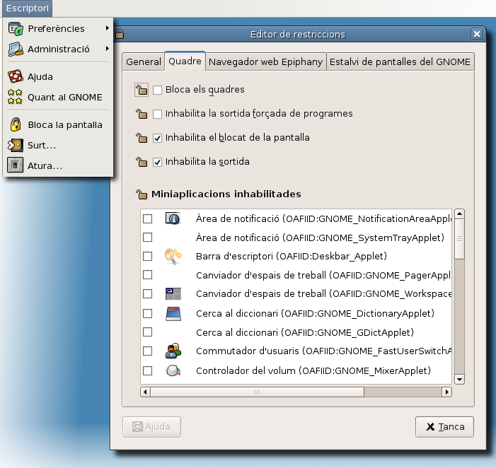
Les opcions per a blocar la pantalla, sortir de la sessió i apagar l'ordinador han estat inhabilitades per als usuaris. Push It
Una altra novetat en el nou paquet d'administració és Sabayon. Aquesta potent eina permet que els administradors creïn perfils per a grups d'usuaris, per exemple Programadors o Administradors i defineixin determinades configuracions obligatòries per defecte per a aquest grups. Els administradors poden editar i desplegar perfils ràpidament canviant les configuracions des de dins d'una nova sessió imbricada del GNOME.
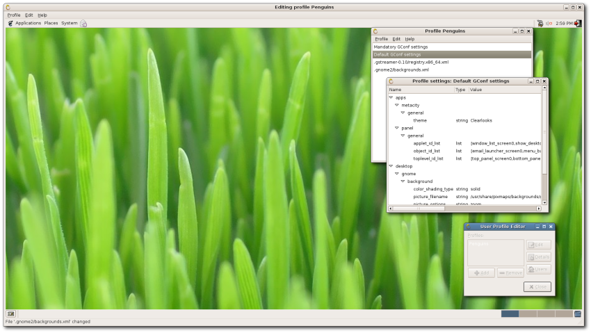 Edició interactiva del perfil Penguins Cercar l'amor
El GNOME 2.14 hauria d'anomenar-se el GNOME cercable, considerant l'addició de nous i potents sistemes de cerca al Nautilus i al Yelp. Tots dos tenen un mode de cerca tradicional més un mode de cerca, ràpid i superenèrgic, per a aquells que esteu acostumats al Beagle!.
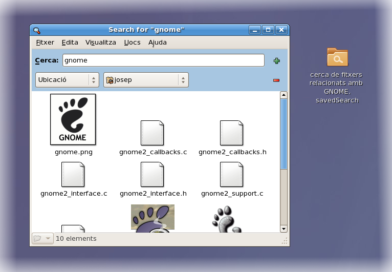 Les cerques al nautilus es poden desar i tornar-les a obrir més tard com a carpetes.
Ajuda!
Com hem dit, el Yelp, el navegador de l'ajuda del GNOME, acaba d'adquirir la capacitat de cerca, però també ha guanyat molt, molt més. Ara, l'accés a les pàgines man de UNIX i a les pàgines Info de GNU ara està habilitat per defecte (fins i tot s'hi poden fer cerques!), i podeu imprimir còpies en paper del vostres manuals; i, per a acabar-ho d'arrodonir, tot va molt més ràpid.
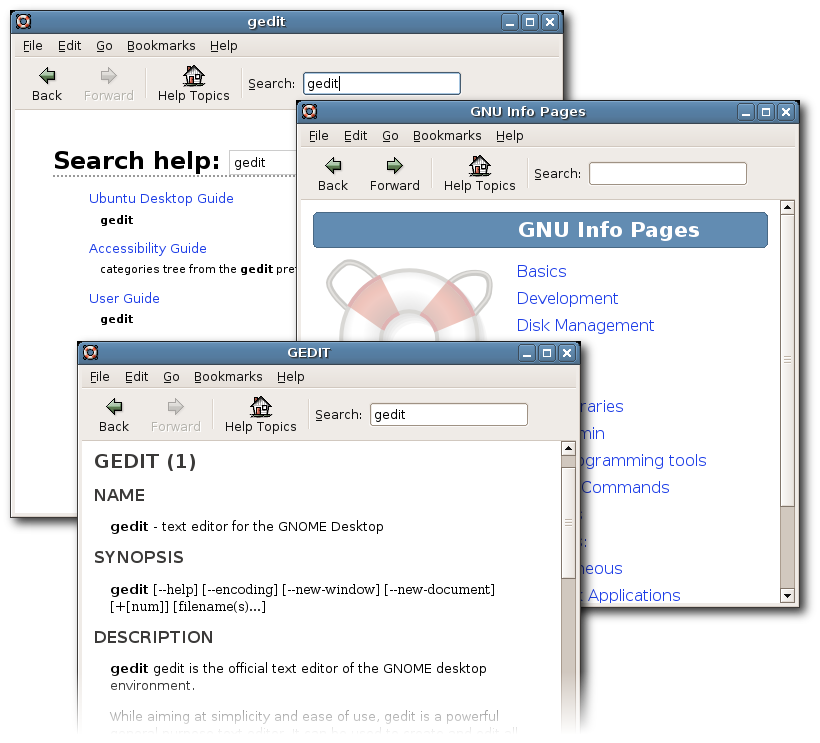 Cerqueu ajuda i llegiu manuals i fitxers d'informació.Un missatge per a la xicota
L'Ekiga, abans conegut com GNOME Meeting, ha arribat a la versió 2.0! Ara, l'Ekiga admet un nombre de funcions increïble, incloent-hi la compatibilitat per a SIP i H323 per a veu i vídeo per IP, configuració STUN automàtica, compatibilitat amb PC-a-telèfon per a fer trucades internacionals econòmiques, i moltes coses més. A més de serun excel·lent client VoIP, l'Ekiga també s'integra amb la vostra llibreta d'adreces de l'Evolution o amb el directori LDAP de l'empresa, així com amb els serveis de pàgines blanques del vostre proveïdor VoIP per tal que no us calgui haver de recordar les adreces VoIP.
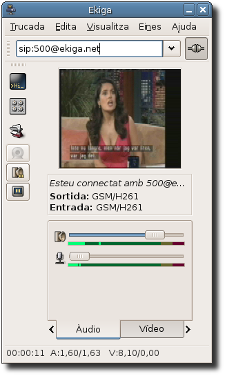 Trucada SIP en progrés amb àudio i vídeo.A més de l'Ekiga, els usuaris que no tinguin cap compte SIP poden registrar-ne un amb Ekiga.net, aconseguint presència SIP gratuïta a Internet.
Mireu a través de qualsevol finestra
El Metacity, el gestor de finestres del GNOME, ha rebut algunes noves característiques interessants. En primer lloc, disposa de vores amb resistència: això significa que les vores de les finestres ofereixen resistència quan intenteu moure unes finestres sobre les altres, fent possible que alinear les finestres siguii més fàcils. Les vores dels monitors i els quadres també ofereixen resistència per a poder alinear finestres contra les vores dels monitors.
S'ha millorat la funció de múltiples monitors, amb o sense Xinerama, evitant conscientment posar finestres petites i quadres de diàleg entre els límits dels monitors. Això significa que molts quadres de diàleg d'aplicacions antigues, com ara les de GTK+ 1.2 i les de Motif, seran desplaçats del centre de la pantalla a una banda per tal que seguixin sent llegibles.
Per ajudar elsusuaris que usen finestres d'X remotes, el Metacity marcarà les finestres que s'estan executant a una màquina diferent de la del Metacity. Això permetrà que els usuaris identifiquin a quina màquina s'està executant una aplicació gràfica, i ajudarà a prevenir que tasques possiblement destructives s'executin a la màquina que no pertoca..
Finalment, ara el Metacity té un nou gestor de composició integrat. El nou gestor de composició usa la libcm i OpenGL, i implementa totes les característiques de composició bàsiques, com ara ombres, transparències dels menús i minimitzacions animades. Ara, mostrar finestres enfosquides i canviar la mida de les finestres ja no provocarà efectes visuals desagradables, ja que ara tot això es gestiona a una memòria externa a la pantalla abans de fer la composició. La integració del gestor de composició amb el Metacity proporciona la potència d'un gestor de finestres i de composició alhora, juntament amb la gran capacitat de gestió del Metacity per a aplicacions velles o que funcionen incorrectament. El gestor de composició del Metacity necessita les darreres característiques de la versió inestable d'X.org a més de la nova extensió ''texture-from-pixmap'', i per tant aquesta funció està inhabilitada per defecte.
el gestor de composició del Metacity fent ombres sota la finestra (amb un tema que utilitza el motor basat en Clearlooks 2.7 Cairo).El món sencer a les vostres mans
Arriba el Deskbar, una fabulosa nova miniaplicació per als quadres de l'escriptori del GNOME. El Deskbar permet executar programes, obrir adreces d'interès, utilitzar motors de cerca, fer cerques amb Google, Yahoo o Beagle al moment i molt més. Els connectors de cerca del Deskbar s'han escrit en Python, i per tant se'n poden desenvolupar més de nous molt ràpidament.
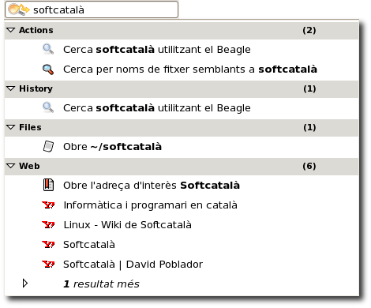 El Deskbar dins un quadre
El Deskbar també es presenta en un mode de mida reduïda per a quadres petits o verticals en què el camp d'entrada se'n desplega.Canvis
Ara, una característica important per a l'usuari domèstic com és el canvi ràpid d'usuari està disponible a l'escriptori. A l'igual que el canvi opcional des del panell, també podeu canviar d'usuari des del diàleg de final de sessió i des de l'estalvi de pantalla.
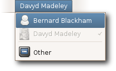 canvieu entre usuaris directament des del panell.
Evolution
La darrera versió de l'Evolution permet l'ús de diversos protocols i servidors nous, incloent el nou servidor Hula i el CalDAV, un protocol d'agenda semblant al WebDAV. Es completa així una part que s'ha trobat a faltar durant molt de temps en aquest paquet ofimàtic de treball en grup lliure i obert, i ve juntament amb l'IMAP i l'LDAP per a oferir-vos una connnexió itinerant a la vostra agenda. De la mateixa manera que una agenda local, Groupwise o Exchange, aquestes agendes es poden editar i compartir amb altres usuaris.
visualització de calendaris a l'Evolution, incloent un calendari CalDAV i un calendari Webcal
Ara, L'Evolution integra completament la possibilitat d'utilitzar l'Exchange com a connector (el botó per a l'Exchange ja no hi és) i admet l'ús d'entrades Memo (o VJOURNAL) en els fitxers iCal.
Escriptura i composició
"gedit", el flexible editor de textos del GNOME, té moltes noves funcions a la interfície d'usuari que són part de la gran feina realitzada per a admetre l'ús de múltiples documents. Com a resultat, ara és molt més fàcil treballar amb múltiples documents (per exemple de codi font) amb el gedit. Afegint això a un potent ressaltament sintàctic i a altres funcions, es fa palès que el gedit és un editor molt útil per a treballar en molts tipus diferents de projectes multidocument..
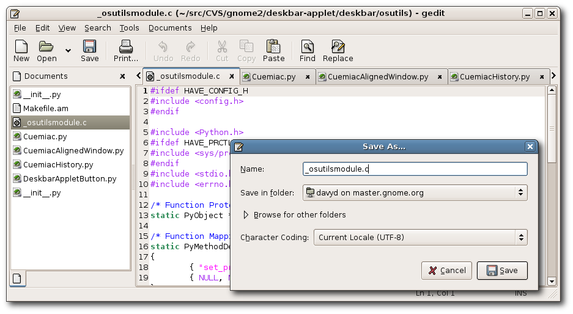 el gedit, amb fitxers amb codi font oberts, pot desar-los a servidors remots
La funció de poder llegir i escriure documents en servidors remots està finalment disponible i és estable, i és una potent eina per a l'edició de fitxers remots (com ara llocs web) sense haver de patir el retard de l'accés a la xarxa des d'una màquina remota.
També és nova la possibilitat d'escriure connectors en Python; ara, la funcionalitat de gedit es pot ampliar fàcilment sense haver d'escriure codi en C. Entre els potents nous connectors trobem l'execució d'ordres externes, com ara ''make'', utilitzant dreceres de teclat, la possibilitat de compleció basada en etiquetes i una consola Python interactiva.
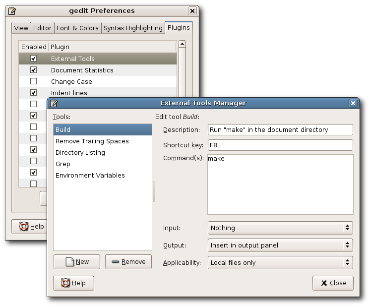 des del diàleg de connectors del gedit, podem configurar connectors actius per a satisfer els nostres requeriments
Un home ben vestit
Com tot home ben vestit sap, les noies embogeixen amb els gràfics d'aspecte suau. Gràcies a la disponibilitat de Cairo a l'escriptori, la fi dels gràfics mediocres i les línies cantelludes és a prop.
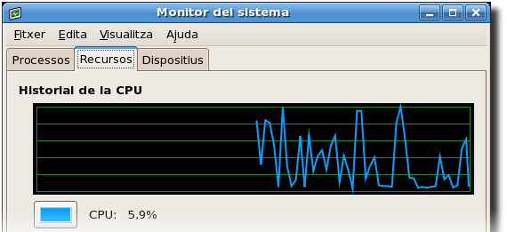 s'han acabat les línies cantelludes al monitor del sistema del GNOME.
El dormilega
El GNOME Screensaver és un nou mòdul d'estalvi de pantalla per al GNOME. A més dels nous estalvis de pantalla, també pot usar els nostres clàssics favorits d'Xscreensaver. El GNOME Screensaver ofereix una bona integració amb l'inminent gestor d'energia del GNOME, admet l'acessibilitat i té diàlegs traduïbles.
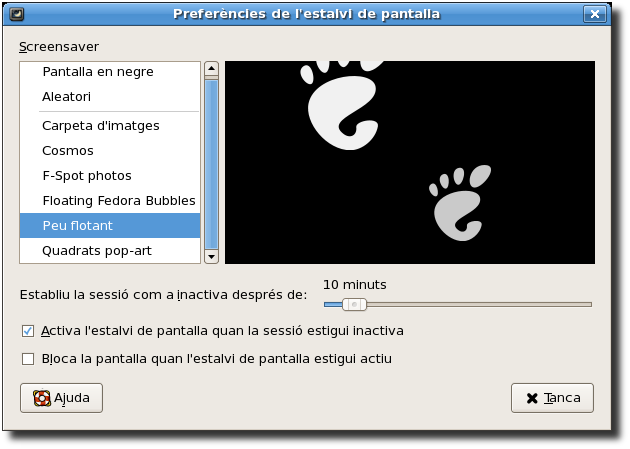 La configuració del GNOME Screensaver previsualitza el Floating Feet
Només és so
Tot millorant la capacitat multimèdia, el GNOME 2.14 es distribuirà amb el GStreamer 0.10, la darrera branca d'aquesta popular plataforma multimèdia. El GStreamer 0.10 és més ràpid i més estable que qualsevol dels seus predecessors, i podreu comprovar-ho al GNOME. Tant el "Totem" com el "Sound Juicer" i el mesclador s'han convertit en el GStreamer 0.10. El GStreamer 0.10 també és compatible amb els inminents connectors multimèdia amb llicència de Fluendo (el connector per a MP3 ja està disponible).
Opcions
De vegades, les coses que des de sempre havien estat molt complicades es tornen ben senzilles. És el cas del quadre de diàleg de les aplicacions preferides. La paraula seria "estètica".
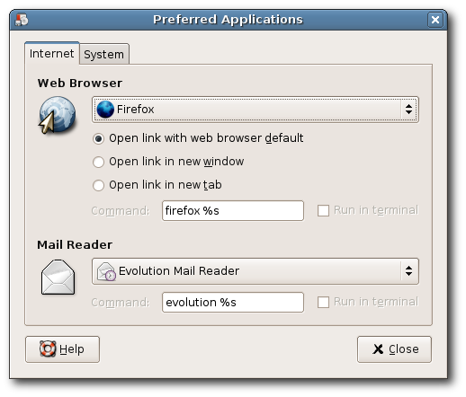 trieu les vostres aplicacions preferides de la llista d'aplicacions registrades, o bé introduïu una ordre personalitzada
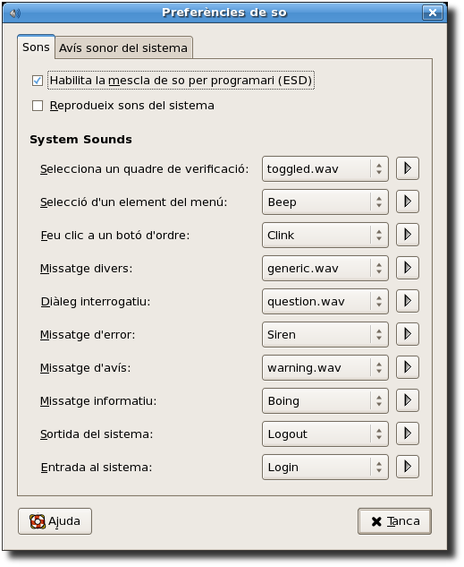 les preferències de so també ofereixen més opcions i de manera més senzilla.
Esteu veient el mateix que jo?
Estan arribant un munt de coses fantàstiques al món del GNOME. Encara no formen part de l'escriptori oficial del GNOME, però ja s'estan integrant perfectamnent i poden aparèixer en pròximes distribucions. Quan s'hagin provat i revisat més a fons, espereu-les també al GNOME.
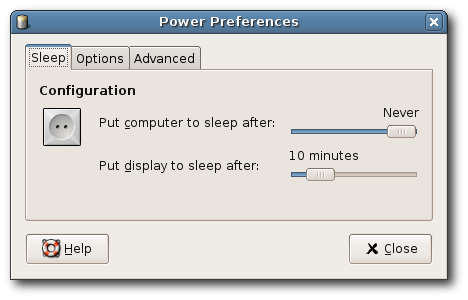 GNOME Power Manager
El GNOME Power Manager és la generació següent de sistemes de gestió d'energia construït sobre la capa d'abstracció de maquinari (HAL, ''Hardware Abstraccion Layer''). Proporciona als usuaris el poder de controlar molts aspectes de la gestió d'energia a l'escriptori, especialment en ordinadors portàtils.
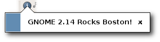 Estructura de notificació
L'estructura de notificació és un conjunt de ginys de notificació que es trobaven a faltar molt al GNOME. Moltes aplicacions ja poden aprofitar aquesta estructura de notificació si hi és present. Hi ha qui troba que els avisos emergents d'altres entorns d'escriptori són enutjosos, així que GNOME, per a evitar-ho, està treballant en unes directrius d'eliminació per a la seva interfície humana (''Human Interface Guidelines'') abans del GNOME 2.16.
Us ha agradat aquesta pàgina?
Si us ha agradat aquesta pàgina, us recomanem també The GNOME Journal, el diari oficial del Projecte GNOME. Llegiu-lo avui mateix!
Tots els comentaris/queixes/consultes/censures, al Davyd Madeley. Gràcies a l'Andy Fitzsimon per a ajudar-nos en la creació de gràfics de rendiment. Gràcies al Ray Strode per les imatges del gestor de composicions Metacity. Gràcies a Harish Krishnaswamy per deixar-me un compte de Hula. Gràcies a l'extensa comunitat GNOME per la lectura de proves. GNOME © 1997-2006, Free Software Foundation i altres Aquesta pàgina © 2006, Davyd Madeley
Llicència Creative Commons Aquest treball està llicenciat sota una llicència Creative Commons Atribució-CompartirIgual 2.5 License.
Enllaç a l'article original - Traducció de: Toni Hermoso, Francesc Dorca, Jordi Mas, Xavier Conde, Pau Cabot, Carme Maneiro i Montserrat Arévalo.

{kind=link}
{kind=link}
{kind=link}